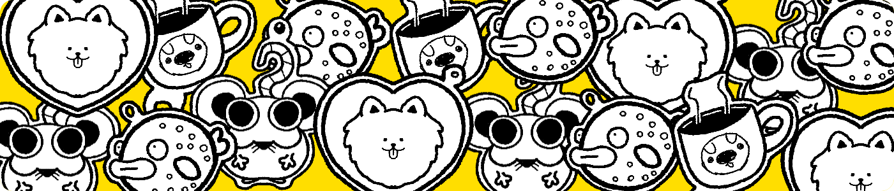
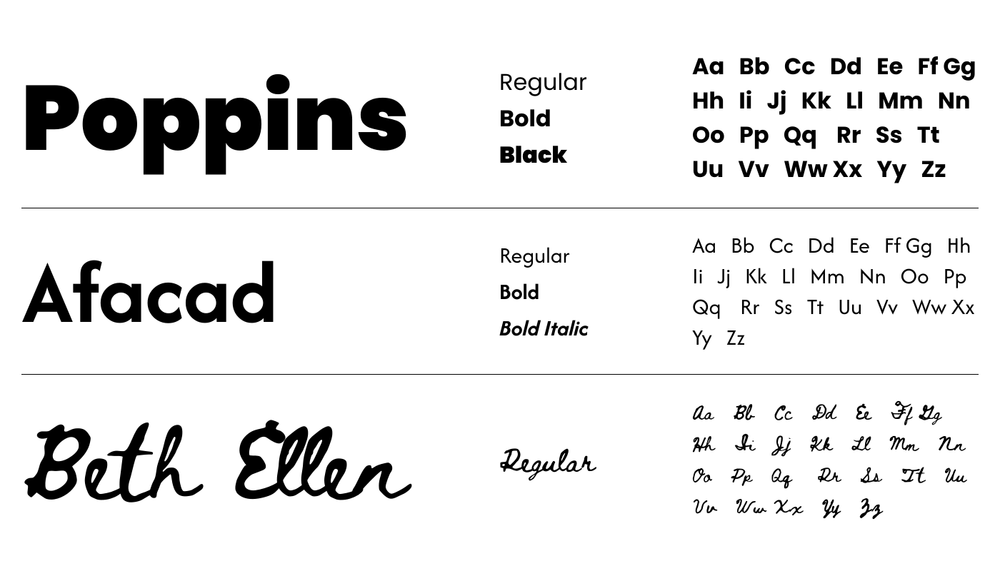

MAYSA - IDENTIDADE VISUAL
identidade visual - 2026
Este projeto de identidade visual própria foi desenvolvido para uso profissional, com o objetivo de construir minha marca pessoal.
O desenvolvimento da identidade teve como foco a construção de uma linguagem visual consistente, explorando tipografia, cores e elementos gráficos de maneira equilibrada e funcional.
O resultado é uma identidade visual criada para representar minha marca pessoal de forma profissional, unindo criatividade, clareza e consistência visual.
*projeto criado para uso profissional


